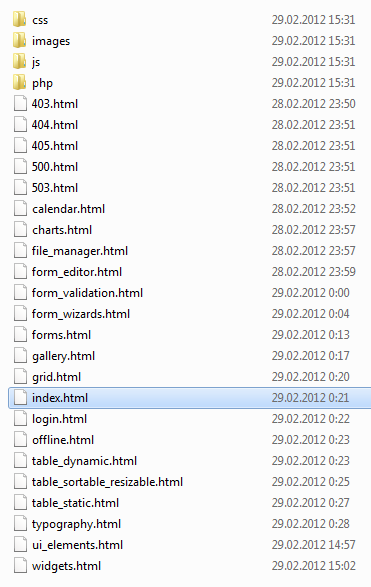
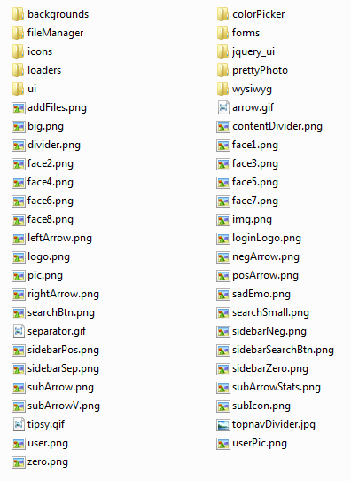
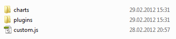
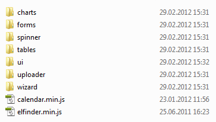
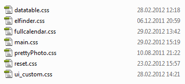

Crown - premium responsive admin template for backend panels
Full documentation
- Created: 29/02/2012
- latest Update: 29/02/2012
- By: Eugene Kopyov
First of all i want to thank you for purchasing my theme. If you have any questions that are beyond the scope of this help file, please feel free to email via my user page contact form here. Thanks so much!
Crown theme main features:
- Liquid 2 columns layout
- Integrated Flot charts
- Lines
- Bars (vertical and horizontal with tooltips)
- Pies
- Form elements:
- Default text input fields with placeholder, on hover tooltip, read only, disabled, with maximum length, with note, with icons, grid and predefined value.
- Textarea with fixed height, characters counter and autogrowing feature
- Tags input
- Masked input feature
- Dropdown and select lists
- Spinner with mousewheel support: simple number input, decimal, currency, inline data, inline data with links
- Styled checkboxes and radio buttons
- File uploader with auto select of HTML version, which your current browser supports (HTML4/HTML5). For HTML5 version there is a drag-n-drop function, progress bar, file size and multi select, for HTML4 - it's a usual single file uploader with status bar.
- Styled single file uploader
- WYSIWYG editor
- Integrated validation engine
- Multi selects with filtering and with drodown
- Interface elements:
- RESPONSIVE LAYOUT
- 3 types of statistics row:
- Big buttons with color icons
- Small inline buttons
- Statistics with dropdown and bar charts
- 4 notification blocks, with hide and slide effect
- Usual date picker
- Inline date picker
- Color picker
- Inline color picker
- Animated progress bars with tooltip in 3 colors for content part and sidebar
- 13 types of AJAX loaders
- Progress bars: usual one, with percentages and timer, with percentages and timer + delay on start
- 10 button colors: grey, red, blue, green, greyish, orange, light red, purple, light blue, black
- Growl notification: sticky, basic, with header, long live message
- 2 types of tabs: as a widget or full width area
- Breadcrumbs with dropdowns
- jQuery UI dialog
- Custom pagination
- 4 tooltip directions: south, north, west, east
- 2 buttons sizes.
- Ability to use large buttons as a widget
- 5 colors numbers data buttons for use in headers
- Styled jQuery UI sliders
- Fixed top navigation with dropdowns
- Middle navigation buttons with dropdowns
- Integrated Autocomplete feature
- Content grid
- Integrated source code viewer
- Custom media table
- Image gallery
- 4 unordered list icons with 4 colors for each icon
- Tables - dynamic, static, inside tabs, with custom pagination, with sortable columns, with resizable columns, combined.
- Calendar with schedule
- 16 custom content widgets
- 9 custom sidebar widgets
- File manager
- 237 color icons in 2 sizes
- 300 usual icons in 2 colors
- 6 custom error pages
- 3 types of wizards - with ajax submit, with validation, with usual submit
Files structure
In downloaded package you'll find "HTML" folder, which contains main theme files: HTML files, Jquery plugins and libraries, images, PHP files, CSS files:

All php, js and css files are in proper folders without sorting. Images are separated and could be found in a proper folder:

In JS folder you'll find a structured files. Custom.js is a file with plugins parameters, Charts folder contains chart parameters, Plugins folder contains all jQuery plugins used in this theme


HTML Structure
In total there are 23 main theme .html files:
- index.html - dashboard page
- charts.html - diagrams and charts page
- calendar.html - calendar with schedule page
- file_manager.html - file manager
- forms.html - general form elements
- gallery.html - images gallery page
- form_editor.html - WYSIWYG editor and multiple file uploader
- form_validation.html - form validation engine
- form_wizards.html - page with wizards
- login.html - login form page
- offline.html - website is offline page
- table_static.html - static tables
- table_dynamic.html - dynamic tables
- table_sortable_resizable.html - tables with sortable and resizable columns
- typography.html - typography page
- ui_elements.html - user interface elements page
- widgets.html - widgets examples page
- grid.html - content grid page
- 403.html - 403 error page
- 404.html - 404 error page
- 405.html - 405 error page
- 500.html - 500 error page
- 503.html - 503 error page
All these html files have certain html blocks in their source code. All the html blocks are clearly commented out and should be easy to spot. Most HTML files contain left navigation sidebar. The main structure of a typical page would be:
Crown theme has responsive layout - it means that it was adapted for different screen resolutions.
PHP files
There are 4 .php files included to the package:
- connector.php - php connector for file manager
- elFinder.class.php - main settings for file manager
- upload.php - server side settings for file uploader
- search.php - autocomplete file
In upload.php file you can set folder for uploaded files. All PHP files are well commented so just follow those tips to setup theme features for your needs.
PHP connector options
<?php
// Include connector
include_once dirname(__FILE__).DIRECTORY_SEPARATOR.'elFinder.class.php';
$opts = array(
'root' => '/var/www/localhost/elfinder/files',
'URL' => 'http://localhost/elfinder/files',
'lang' => 'ru',
'debug' => false,
'arc' => '7za',
'fileURL' => false,
'imgLib' => 'mogrify',
'dotFiles' => true,
'dirSize' => true,
'uploadAllow' => array('image/png'),
'uploadDeny' => array('image', 'text'),
'uploadOrder' => 'deny,allow',
'disabled' => array('edit', 'rename'),
'tmbDir' => '_tmb',
'defaults' => array(
'read' => true,
'write' => true,
'rm' => true
),
);
$fm = new elFinder($opts);
$fm->run();
?>
Options table
| root | String | Path to root directory. Required parameter |
| URL | String | URL of root directory. Required parameter |
| rootAlias | String | Alias for root directory |
| disabled | Array | List of disabled commands |
| dotFiles | Boolean | Show dot files. Default: true |
| dirSize | Boolean | Calculate directory sizes |
| fileMode | Octal | mode for new files |
| dirMode | Octal | mode for new directories |
| mimeDetect | String | MIME-type detection method (possible values: finfo, php, linux (file -ib), bsd (file -Ib), internal (based on file extensions)) |
| uploadAllow | Array | List of mime-types allowed to upload. Can be set exactly image/jpeg or to group application |
| uploadDeny | Array | List of mime-types disallowed to upload |
| uploadOrder | String | Order of upload rules execution. allow,deny only what is allowed, except what is disallowed (AND). deny,allow what is not disallowed or allowed (OR) |
| imgLib | String | Library for thumbnail creation (possible values: imagick, mogrify, gd). If not set will try detect automatically |
| tmbDir | String | Thumbnail direcroty. If not set thumbnails will be disabled |
| tmbCleanProb | Integer | How often to clean thumbnails. Possible values: from 0 to 200. 0 - never, 200 - on each client init request |
| tmbAtOnce | Integer | How many thumbnails to create per background request. Default: 5 |
| tmbSize | Integer | Thumbnail size in pixels |
| fileURL | Boolean | Show real URLs to files in client. Default: true |
| dateFormat | String | Time format. Default: j M Y H:i |
| logger | Object | Object-logger |
| defaults | Array | Default access for files/directories. Default: array( 'read' => true, 'write' => true, 'rm' => true ) |
| perms | Array | Permission for files/directories. More information on this page |
| archiveMimes | Array | List of file archives allowed to create. If not set will allow all detected archvies |
| archivers | Array | Information about archivers. If not set will try detect all available |
| debug | Boolean | Send debug information to client |
CSS files and structure
CSS files structure
In total there are 7 css files:
- main.css - main css file with general styles
- datatable.css - dynamic table styles
- elfinder.css - styles for file manager
- fullcalendar.css - styles for calendar with schedule
- reset.css - css reset file
- ui_custom.css - Jquery UI custom styles
- prettyPhoto.css - styles for prettyPhoto plugin

main.css file imports all alternative stylesheets, so you don't need to include all .css files in each HTML page, simply add/remove necessary line in main.css (first lines):
@import "reset.css";
@import "fullcalendar.css";
@import "datatable.css";
@import "ui_custom.css";
@import "prettyPhoto.css";
@import "elfinder.css";
and inside HTML page include only one main file:
Responsive layout
My theme includes media queries, it means that general layout changes depending on the screen resolution.
All media query styles are placed into main.css
All CSS files are well commented, so you can easily find and edit any class in any CSS file.
Backgrounds
Crown has 10 general preloaded backgrounds. All of them should be applied to html tag:
html { height: 100%; background: transparent url(../images/backgrounds/bg.jpg); }
If you want to change the main background, you need to change just a path to the pattern image:
html { height: 100%; background: transparent url(../images/backgrounds/patterns/pattern_image.png; }
All pattern images can be found in /images/backgrounds/patterns/folder.
JS files and structure
JS files structure
In total there are 45 JS files:
- custom.js
- bar.js
- chart.js
- hBar.js
- pie.js
- updating.js
- excanvas.min.js
- jquery.flot.js
- jquery.flot.orderBars.js
- jquery.flot.pie.js
- jquery.flot.resize.js
- jquery.sparkline.min.js
- autogrowtextarea.js
- chosen.jquery.min.js
- jquery.cleditor.js
- jquery.dualListBox.js
- jquery.inputlimiter.min.js
- jquery.maskedinput.min.js
- jquery.validationEngine.js
- jquery.validationEngine-en.js
- jquery.tagsinput.min.js
- uniform.js
- jquery.mousewheel.js
- ui.spinner.js
- datatable.js
- resizable.min.js
- tablesort.min.js
- jquery.breadcrumbs.js
- jquery.collapsible.min.js
- jquery.colorpicker.js
- jquery.jgrowl.js
- jquery.prettyPhoto.js
- jquery.progress.js
- jquery.sourcerer.js
- jquery.timeentry.min.js
- jquery.tipsy.js
- jquery.plupload.queue.js
- plupload.html4.js
- plupload.html5.js
- plupload.js
- jquery.form.js
- jquery.form.wizard.js
- jquery.validate.min.js
- calendar.min.js
- elfinder.min.js
And 2 .js files (minified Jquery UI library and minified jQuery library) loads from external resource:
<script type="text/javascript" src="http://ajax.googleapis.com/ajax/libs/jquery/1.7/jquery.min.js">
<script type="text/javascript" src="http://ajax.googleapis.com/ajax/libs/jqueryui/1.8/jquery-ui.min.js">
JS files inside HTML pages
In general each HTML page loads all these 45 .js files. In your project you can minify all these files into 1 or do anything you want, but in download package i included all files so you can easily edit/remove/add new files.
Each JS file is in proper folder: all files, which are used for forms are placed in /forms/ folder, the same path is in HTML page:
<script type="text/javascript" src="http://ajax.googleapis.com/ajax/libs/jquery/1.7/jquery.min.js">
<script type="text/javascript" src="js/plugins/spinner/ui.spinner.js">
<script type="text/javascript" src="js/plugins/spinner/jquery.mousewheel.js">
<script type="text/javascript" src="http://ajax.googleapis.com/ajax/libs/jqueryui/1.8/jquery-ui.min.js">
<script type="text/javascript" src="js/plugins/charts/excanvas.min.js">
<script type="text/javascript" src="js/plugins/charts/jquery.flot.js">
<script type="text/javascript" src="js/plugins/charts/jquery.flot.orderBars.js">
<script type="text/javascript" src="js/plugins/charts/jquery.flot.pie.js">
<script type="text/javascript" src="js/plugins/charts/jquery.flot.resize.js">
<script type="text/javascript" src="js/plugins/charts/jquery.sparkline.min.js">
<script type="text/javascript" src="js/plugins/forms/uniform.js">
<script type="text/javascript" src="js/plugins/forms/jquery.cleditor.js">
<script type="text/javascript" src="js/plugins/forms/jquery.validationEngine-en.js">
<script type="text/javascript" src="js/plugins/forms/jquery.validationEngine.js">
<script type="text/javascript" src="js/plugins/forms/jquery.tagsinput.min.js">
<script type="text/javascript" src="js/plugins/forms/autogrowtextarea.js">
<script type="text/javascript" src="js/plugins/forms/jquery.maskedinput.min.js">
<script type="text/javascript" src="js/plugins/forms/jquery.dualListBox.js">
<script type="text/javascript" src="js/plugins/forms/jquery.inputlimiter.min.js">
<script type="text/javascript" src="js/plugins/forms/chosen.jquery.min.js">
<script type="text/javascript" src="js/plugins/wizard/jquery.form.js">
<script type="text/javascript" src="js/plugins/wizard/jquery.validate.min.js">
<script type="text/javascript" src="js/plugins/wizard/jquery.form.wizard.js">
<script type="text/javascript" src="js/plugins/uploader/plupload.js">
<script type="text/javascript" src="js/plugins/uploader/plupload.html5.js">
<script type="text/javascript" src="js/plugins/uploader/plupload.html4.js">
<script type="text/javascript" src="js/plugins/uploader/jquery.plupload.queue.js">
<script type="text/javascript" src="js/plugins/tables/datatable.js">
<script type="text/javascript" src="js/plugins/tables/tablesort.min.js">
<script type="text/javascript" src="js/plugins/tables/resizable.min.js">
<script type="text/javascript" src="js/plugins/ui/jquery.tipsy.js">
<script type="text/javascript" src="js/plugins/ui/jquery.collapsible.min.js">
<script type="text/javascript" src="js/plugins/ui/jquery.prettyPhoto.js">
<script type="text/javascript" src="js/plugins/ui/jquery.progress.js">
<script type="text/javascript" src="js/plugins/ui/jquery.timeentry.min.js">
<script type="text/javascript" src="js/plugins/ui/jquery.colorpicker.js">
<script type="text/javascript" src="js/plugins/ui/jquery.jgrowl.js">
<script type="text/javascript" src="js/plugins/ui/jquery.breadcrumbs.js">
<script type="text/javascript" src="js/plugins/ui/jquery.sourcerer.js">
<script type="text/javascript" src="js/plugins/calendar.min.js">
<script type="text/javascript" src="js/plugins/elfinder.min.js">
<script type="text/javascript" src="js/custom.js">
<script type="text/javascript" src="js/charts/chart.js">
<script type="text/javascript" src="js/charts/bar.js">
<script type="text/javascript" src="js/charts/hBar.js">
<script type="text/javascript" src="js/charts/updating.js">
<script type="text/javascript" src="js/charts/pie.js">
Javascript files which contain jQuery Flot parameters load only on those pages, which have a graph. There is a well known flot issue with plot drawing, when parameters are loaded, but the chart isn't included in the page.
Note: it's important to use this order of files, because some of plugins contain modified Jquery UI code and other features. Better choice is to use custom.js file below others, because it contains loaders for all these plugins.
All JS files are well commented, so you can easily find and edit any code in any JS file.
Jquery Plugins
List of Jquery plugins which were used in Crown theme, with details:
Dual select boxes
Overview
This plug-in allows you to "transfer" the <option> elements between the <select>s in two distinct ways:
- Move - In this mode, <option> elements will be removed from the <select> in which they currently reside and moved to the other <select>. This is the default.
- Copy - In this mode, items in the first <select> will ALWAYS remain in the first <select>(unless they are hidden by filtering). When they are selected for transfer they will be copied to the second <select> and will be given the class 'copiedOption' in the first <select> (my default styling for this class is yellow background but you may choose whatever styling suits you). If they are then transferred from the second <select>, they disappear from the second<select>, and the 'copiedOption' class is removed from the corresponding <option> in the first <select>.
Options
The following table has a listing of all the possible option settings, their default values, their valid values, and a brief description of each.
| Parameter | Default Value | Values | Description |
|---|---|---|---|
| box1View | 'box1View' | Any valid HTML id string. | The id attribute of the first visible <select> element. |
| box1Storage | 'box1Storage' | Any valid HTML id string. | The id attribute of the first hidden <select> element. (See section Document Structure for an explanation of visible/hidden <select> elements.) |
| box1Filter | 'box1Filter' | Any valid HTML id string. | The id attribute of the textbox used to filter the first<select> element. |
| box1Clear | 'box1Clear' | Any valid HTML id string. | The id attribute of the element used to clear the filter for the first <select> element. This is typically a button, but can technically be any element. |
| box1Counter | 'box1Counter' | Any valid HTML id string. | The id attribute of the element used to display counts of visible/total <option>s in the first <select>element. (used when filtering). |
| box2View | 'box2View' | Any valid HTML id string. | The id attribute of the second visible <select>element. |
| box2Storage | 'box2Storage' | Any valid HTML id string. | The id attribute of the second hidden <select>element. |
| box2Filter | 'box2Filter' | Any valid HTML id string. | The id attribute of the textbox used to filter the second<select> element. |
| box2Clear | 'box2Clear' | Any valid HTML id string. | The id attribute of the element used to clear the filter for the second <select> element. This is typically a button, but can technically be any element. |
| box2Counter | 'box2Counter' | Any valid HTML id string. | The id attribute of the element used to display counts of visible/total <option>s in the second <select>element. (used when filtering). |
| to1 | 'to1' | Any valid HTML id string. | The id attribute of the element used to transfer only selected <option>s from the second <select> to the first. |
| to2 | 'to2' | Any valid HTML id string. | The id attribute of the element used to transfer only selected <option>s from the first <select> to the second. |
| allTo1 | 'allTo1' | Any valid HTML id string. | The id attribute of the element used to transfer ALL<option>s from the second <select> to the first. |
| allTo2 | 'allTo2' | Any valid HTML id string. | The id attribute of the element used to transfer ALL<option>s from the first <select> to the second. |
| transferMode | 'move' | 'move','copy' | The type of transfer to perform on moved items. See section Transfer Modes for a full description of each. |
| sortBy | 'text' | 'text','value' | The value to sort <option> elements by. 'text' causes them to sort alphanumerically (ascending) by the visible text of the option. 'value' causes them to sort alphanumerically (ascending) by their 'value' attribute. |
| useFilters | true | true,false | True to enable filtering, false to disable it. If this setting is false, it is recommended that useCounters also be set to false, as the counters will not serve a purpose. |
| useCounters | true | true,false | True to enable counters, false to disable them. |
| useSorting | true | true,false | Sorting enforces a consistent sort order on the<option> elements, regardless of what order they are transferred in. Set this to false if you do not want them to (or do not care if they) maintain a consistent order. |
| selectOnSubmit | true | true,false | In order for options in box 2 to be recieved by POST, they must be selected before the form is submitted. Since this is most often the desired behavior, it is enabled by default. Set this option to false to disable. |
Note: Original documentation for this plugin you can find on official plugin's website: http://www.meadmiracle.com/dlb/DLBDocumentation.aspx
Time picker
Overview
A jQuery plugin that sets an input field up to pick a time value using a spinner.
Defaults:
- Text is in English
- Time format is HH:MMAP - 12 hour time
- Increment/decrement all fields by one
- Subfields selectable by mouse click
- No time restrictions
- Spinner is displayed
- Spinner auto-repeats on increment/decrement
- Mouse wheel increment/decrement (with jquery.mousewheel.js)
- Field's on change event fires (see to the right)
Options
$(selector).timeEntry({
show24Hours: false, // True to use 24 hour time, false for 12 hour (AM/PM)
separator: ':', // The separator between time fields
ampmPrefix: '', // The separator before the AM/PM text
ampmNames: ['AM', 'PM'], // Names of morning/evening markers
// The popup texts for the spinner image areas
spinnerTexts: ['Now', 'Previous field', 'Next field', 'Increment', 'Decrement'],
appendText: '', // Display text following the input box, e.g. showing the format
showSeconds: false, // True to show seconds as well, false for hours/minutes only
timeSteps: [1, 1, 1], // Steps for each of hours/minutes/seconds when incrementing/decrementing
initialField: 0, // The field to highlight initially, 0 = hours, 1 = minutes, ...
useMouseWheel: true, // True to use mouse wheel for increment/decrement if possible,
// false to never use it
defaultTime: null, // The time to use if none has been set, leave at null for now
minTime: null, // The earliest selectable time, or null for no limit
maxTime: null, // The latest selectable time, or null for no limit
spinnerImage: 'spinnerDefault.png', // The URL of the images to use for the time spinner
// Seven images packed horizontally for normal, each button pressed, and disabled
spinnerSize: [20, 20, 8], // The width and height of the spinner image,
// and size of centre button for current time
spinnerBigImage: '', // The URL of the images to use for the expanded time spinner
// Seven images packed horizontally for normal, each button pressed, and disabled
spinnerBigSize: [40, 40, 16], // The width and height of the expanded spinner image,
// and size of centre button for current time
spinnerIncDecOnly: false, // True for increment/decrement buttons only, false for all
spinnerRepeat: [500, 250], // Initial and subsequent waits in milliseconds
// for repeats on the spinner buttons
beforeShow: null, // Function that takes an input field and
// returns a set of custom settings for the time entry
beforeSetTime: null // Function that runs before updating the time,
// takes the old and new times, and minimum and maximum times as parameters,
// and returns an adjusted time if necessary
});
$.timeEntry.setDefaults(settings) // Set default values for all instances
$(selector).timeEntry('change', settings) // Change the settings for selected instances
$(selector).timeEntry('change', name, value) // Change a single setting for selected instances
$(selector).timeEntry('destroy') // Remove the time entry functionality
$(selector).timeEntry('disable') // Disable time entry
$(selector).timeEntry('enable') // Enable time entry
$(selector).timeEntry('isDisabled') // Determine if field is disabled
$(selector).timeEntry('setTime', time) // Set the time for the instance
$(selector).timeEntry('getTime') // Retrieve the currently selected time
$(selector).timeEntry('getOffset') // Retrieve the current time offset
Note: Original documentation for this plugin you can find on official plugin's website: http://keith-wood.name/timeEntry.html
Wizard
Overview
The form wizard plugin is a jQuery plugin which can be used to create wizard like page flows for forms without having to reload the page in between wizard steps. The plugin is unobtrusive and gives the developer great freedom on how they set up the flow of the different steps in their wizards, as the plugin supports creating specific routes in the form; depending on the user input.
Features
- Built on top of jQuery UI for flexible theming
- Divides a single form into different steps to simulate a flow of steps rather than one big form.
- Supports different routes to be taken in the form, depending on user input.
- Submits only input fields located on visited steps in the form.
- Supports multiple "submit"-steps
- Supports both back and forward navigation.
- Supports the usage of browser back- and forward-buttons through integration with the jQuery BBQ: Back Button & Query Library plugin
- Supports client-side validation through integration with the jQuery validation plugin
- Supports posting the form using AJAX through integration with the jQuery.form plugin
- Integrated plugins are fully configurable, providing e.g. possibility for localization, extra validation rules and custom callbacks used during the AJAX-request.
For options and parameters please visit official plugin website.
Note: Original documentation for this plugin you can find on official plugin's website: http://thecodemine.org/
Color Picker ( colorpicker.js )
Implement
Attach the Javascript and CSS files to your document. Edit CSS file and fix the paths to images and change colors to fit your site theme.
<link rel="stylesheet" media="screen" type="text/css" href="css/colorpicker.css" /> <script type="text/javascript" src="js/colorpicker.js"></script>
Invocation code
All you have to do is to select the elements in a jQuery way and call the plugin.
$('#colorpickerField').ColorPicker(options);
Options
A hash of parameters. All parameters are optional.
| eventName | string | The desired event to trigger the colorpicker. Default: 'click' |
| color | string or hash | The default color. String for hex color or hash for RGB and HSB ({r:255, r:0, b:0}) . Default: 'ff0000' |
| flat | boolean | Whatever if the color picker is appended to the element or triggered by an event. Default false |
| livePreview | boolean | Whatever if the color values are filled in the fields while changing values on selector or a field. If false it may improve speed. Default true |
| onShow | function | Callback function triggered when the color picker is shown |
| onBeforeShow | function | Callback function triggered before the color picker is shown |
| onHide | function | Callback function triggered when the color picker is hidden |
| onChange | function | Callback function triggered when the color is changed |
| onSubmit | function | Callback function triggered when the color it is chosen |
Set color
If you want to set a new color.
$('#colorpickerField').ColorPickerSetColor(color);
The 'color' argument is the same format as the option color, string for hex color or hash for RGB and HSB ({r:255, r:0, b:0}).
Note: Original documentation for this plugin you can find on official plugin's website: http://www.eyecon.ro/colorpicker/#about
Resizable columns ( colResizable.min.js )
About this plugin
colResizable is a jQuery plugin designed to enhance any kind of HTML table object adding column resizing features by dragging column anchors manually. It is tiny in size (colResizable v1.0 is only 2.8kb) and it doesn´t require any other library dependencies such as jQuery-UI or others. It is fully compatible with all major browsers(IE7+, Firefox, Chrome and Opera), and works perfectly with both percentage and pixel-based table layouts.
Features
colResizable was developed since no other similar plugin with the below listed features was found:
- Small footprint
- No other library dependencies
- Column resizing not altering total table width
- Compatibility with both percentage and pixel-based table layouts
- Customization of column anchors
- Cross-browser compatibility
- Events
Customization
colResizable provides some customization attributes in order to modify its appearance and the way it works:
- liveDrag: [type: boolean] [default: false]
When set to true the table layout is updated while dragging column anchors. liveDrag enabled is more CPU consuming so it is not recommended for slow computers, specially when dealing with huge or extremely complicated tables.- innerGripHtml: [type: string] [default: empty string]
Its purpose is to allow column anchor customization by defining the HTML to be used in the column grips to provide some visual feedback. It can be used in a wide range of ways to obtain very different outputs, and its flexibility can be increased by combining it with the draggingClassattribute.- draggingClass: [type: string] [default: internal css class]
This attribute is used as the css class assigned to column anchors while being dragged. It can be used for visual feedback purposes.- minWidth: [type: number] [default: 15]
This value specifies the minimum width (measured in pixels) that is allowed for the columns.- headerOnly: [type: boolean] [default: false]
This attribute can be used to prevent vertical expansion of the column anchors to fit the table height. If it is set to true, column handler's size will be bounded to the first row's vertical size.- disable: [type: boolean] [default: false]
When set to true it aims to remove all previously added enhancements such as events and additional DOM elements assigned by this plugin to a single or collection of tables. It is required to disable a previously colResized table prior its removal from the document object tree.Note: Original documentation for this plugin you can find on official plugin's website: http://quocity.com/colresizable/
Dynamic tables ( jquery.dataTables.js )
Introduction
DataTables operates on the principle of progressive enhancement, whereby an enhanced and interactive table will be presented to the end user if their browser has the required capabilities. When you initialise the jQuery.dataTable object, information about the table is read directly from the HTML page. In combination with the default values for the features in DataTables, this makes it very easy to integrate directly into your web-site or web-application. Optionally, you can use the initialisation parameters to load data from locations other than the DOM, such as a server-side processing script or an Ajax obtained JSON file.
Features
By default the majority of features that DataTables provides are enabled, such that a richly interactive table is presented to end users. However, you may wish to disable various features to customise DataTables to your specific application. This is possible using the following initialisation parameters.
| bAutoWidth |
Enable or disable automatic column width calculation. This can be disabled as an optimisation (it takes some time to calculate the widths) if the tables widths are passed in using aoColumns. |
| bDeferRender |
Deferred rendering can provide DataTables with a huge speed boost when you are using an Ajax or JS data source for the table. This option, when set to true, will cause DataTables to defer the creation of the table elements for each row until they are needed for a draw - saving a significant amount of time. |
| bFilter |
Enable or disable filtering of data. Filtering in DataTables is "smart" in that it allows the end user to input multiple words (space separated) and will match a row containing those words, even if not in the order that was specified (this allow matching across multiple columns). Note that if you wish to use filtering in DataTables this must remain 'true' - to remove the default filtering input box and retain filtering abilities, please use sDom. |
| bInfo |
Enable or disable the table information display. This shows information about the data that is currently visible on the page, including information about filtered data if that action is being performed. |
| bJQueryUI |
Enable jQuery UI ThemeRoller support (required as ThemeRoller requires some slightly different and additional mark-up from what DataTables has traditionally used). |
| bLengthChange |
Allows the end user to select the size of a formatted page from a select menu (sizes are 10, 25, 50 and 100). Requires pagination (bPaginate). |
| bPaginate |
Enable or disable pagination. |
| bProcessing |
Enable or disable the display of a 'processing' indicator when the table is being processed (e.g. a sort). This is particularly useful for tables with large amounts of data where it can take a noticeable amount of time to sort the entries. |
| bScrollInfinite |
Enable infinite scrolling for DataTables (to be used in combination with sScrollY). Infinite scrolling means that DataTables will continually load data as a user scrolls through a table, which is very useful for large dataset. This cannot be used with pagination, which is automatically disabled. |
| bSort |
Enable or disable sorting of columns. Sorting of individual columns can be disabled by the "bSortable" option for each column. |
| bSortClasses |
Enable or disable the addition of the classes 'sorting_1', 'sorting_2' and 'sorting_3' to the columns which are currently being sorted on. This is presented as a feature switch as it can increase processing time (while classes are removed and added) so for large data sets you might want to turn this off. |
| bStateSave |
Enable or disable state saving. When enabled a cookie will be used to save table display information such as pagination information, display length, filtering and sorting. As such when the end user reloads the page the display display will match what thy had previously set up. |
| sScrollX |
Enable horizontal scrolling. When a table is too wide to fit into a certain layout, or you have a large number of columns in the table, you can enable x-scrolling to show the table in a viewport, which can be scrolled. This property can by any CSS unit, or a number (in which case it will be treated as a pixel measurement). |
| sScrollY |
Enable vertical scrolling. Vertical scrolling will constrain the DataTable to the given height, an enable scrolling for any data which overflows the current viewport. This can be used as an alternative to paging to display a lot of data in a small area (although paging and scrolling can both be enabled at the same time). This property can by any CSS unit, or a number (in which case it will be treated as a pixel measurement). |
Options
Where the DataTables features can be considered rough grain tuning of your DataTables integration, there are many other parameters which will let you obtain the fine grain tuning you might need to make the integration truly seamless. Almost every function that DataTables provides can be fine tuned in some manner using the initialisation options shown below.
| aaData |
An array of data to use for the table, passed in at initialisation which will be used in preference to any data which is already in the DOM. This is particularly useful for constructing tables purely in Javascript, for example with a custom Ajax call. |
| aaSorting |
If sorting is enabled, then DataTables will perform a first pass sort on initialisation. You can define which column(s) the sort is performed upon, and the sorting direction, with this variable. The aaSorting array should contain an array for each column to be sorted initially containing the column's index and a direction string ('asc' or 'desc'). |
| aaSortingFixed | This parameter is basically identical to the aaSorting parameter, but cannot be overridden by user interaction with the table. What this means is that you could have a column (visible or hidden) which the sorting will always be forced on first - any sorting after that (from the user) will then be performed as required. This can be useful for grouping rows together. |
| aLengthMenu |
This parameter allows you to readily specify the entries in the length drop down menu that DataTables shows when pagination is enabled. It can be either a 1D array of options which will be used for both the displayed option and the value, or a 2D array which will use the array in the first position as the value, and the array in the second position as the displayed options (useful for language strings such as 'All'). |
| aoSearchCols |
Basically the same as oSearch, this parameter defines the individual column filtering state at initialisation time. The array must be of the same size as the number of columns, and each element be an object with the parameters "sSearch" and "bEscapeRegex" (the latter is optional). 'null' is also accepted and the default will be used. |
| asStripClasses |
An array of CSS classes that should be applied to displayed rows. This array may be of any length, and DataTables will apply each class sequentially, looping when required. |
| bDestroy |
Replace a DataTable which matches the given selector and replace it with one which has the properties of the new initialisation object passed. If no table matches the selector, then the new DataTable will be constructed as per normal. |
| bRetrieve |
Retrieve the DataTables object for the given selector. Note that if the table has already been initialised, this parameter will cause DataTables to simply return the object that has already been set up - it will not take account of any changes you might have made to the initialisation object passed to DataTables (setting this parameter to true is an acknowledgement that you understand this). bDestroy can be used to reinitialise a table if you need. |
| bScrollCollapse | When vertical (y) scrolling is enabled, DataTables will force the height of the table's viewport to the given height at all times (useful for layout). However, this can look odd when filtering data down to a small data set, and the footer is left "floating" further down. This parameter (when enabled) will cause DataTables to collapse the table's viewport down when the result set will fit within the given Y height. |
| bSortCellsTop |
Allows control over whether DataTables should use the top (true) unique cell that is found for a single column, or the bottom (false - default). This is useful when using complex headers. |
| iCookieDuration |
Duration of the cookie which is used for storing session information. This value is given in seconds. |
| iDeferLoading |
When enabled DataTables will not make a request to the server for the first page draw - rather it will use the data already on the page (no sorting etc will be applied to it), thus saving on an XHR at load time. iDeferLoading is used to indicate that deferred loading is required, but it is also used to tell DataTables how many records there are in the full table (allowing the information element and pagination to be displayed correctly). |
| iDisplayLength |
Number of rows to display on a single page when using pagination. If feature enabled (bLengthChange) then the end user will be able to over-ride this to a custom setting using a pop-up menu. |
| iDisplayStart |
Define the starting point for data display when using DataTables with pagination. Note that this parameter is the number of records, rather than the page number, so if you have 10 records per page and want to start on the third page, it should be "20". |
| iScrollLoadGap |
The scroll gap is the amount of scrolling that is left to go before DataTables will load the next 'page' of data automatically. You typically want a gap which is big enough that the scrolling will be smooth for the user, while not so large that it will load more data than need. |
| oSearch |
This parameter allows you to have define the global filtering state at initialisation time. As an object the "sSearch" parameter must be defined, but the "bRegex" and "bSmart" parameters are optional. When "bRegex" is true, the search string will be treated as a regular expression, when false (default) it will be treated as a straight string. When "bSmart" DataTables will use it's smart filtering methods (to word match at any point in the data), when false this will not be done. |
| sAjaxDataProp |
By default DataTables will look for the property 'aaData' when obtaining data from an Ajax source or for server-side processing - this parameter allows that property to be changed. You can use Javascript dotted object notation to get a data source for multiple levels of nesting. |
| sAjaxSource |
You can instruct DataTables to load data from an external source using this parameter (use aData if you want to pass data in you already have). Simply provide a url a JSON object can be obtained from. This object must include the parameter 'aaData' which is a 2D array with the source data. |
| sCookiePrefix |
This parameter can be used to override the default prefix that DataTables assigns to a cookie when state saving is enabled. |
| sDom | This initialisation variable allows you to specify exactly where in the DOM you want DataTables to inject the various controls it adds to the page (for example you might want the pagination controls at the top of the table). DIV elements (with or without a custom class) can also be added to aid styling. The follow syntax is used:
|
| sPaginationType |
DataTables features two different built-in pagination interaction methods ('two_button' or 'full_numbers') which present different page controls to the end user. Further methods can be added using the API (see below). |
| sScrollXInner | This property can be used to force a DataTable to use more width than it might otherwise do when x-scrolling is enabled. For example if you have a table which requires to be well spaced, this parameter is useful for "over-sizing" the table, and thus forcing scrolling. This property can by any CSS unit, or a number (in which case it will be treated as a pixel measurement). |
Note: Original documentation for this plugin you can find on official plugin's website: http://datatables.net/
File manager ( elfinder.min.js )
File manager for website
elFinder is an open-source file manager for web, written in JavaScript using jQuery UI. As you can see its creation is inspired by simplicity and convenience of Finder program used in Mac OS X operating system.
The main goal of our file manager - is to make you work with remote files the same convenient, as on your computer.
You can select files the usual way as on your computer and then just drag them to desired folder to move.
If you prefer to use "hot keys" then you will not notice any difference using elFinder.
Furthermore elFinder can create and extract archives, and QuickLook function allows you to preview common types of files like images, flash, text, audio, video and even pdf.
It allows to create and edit any text files and resize images.
Flexible configuration options allows to control: access rights, upload files types, log user evens; so everything that need system administrator.
Connectors in different programming languages gives ability to easy integrate our product in your solutions.
Features
- All general operations with files and folders on a remote server (copy, move, upload, create folder/file, rename, etc.)
- Two types of view: list and icons
- High performance of server and client parts
- Multifile upload
- Standart methods of file/group selection using mouse or keyboard
- Context menu
- "Hot keys" for most actions
- Move/Copy files with Drag & Drop
- Work with archives
- Preview for most types of files
- Edit text files and resize images
- "Places" for your favorites
- Calculate directory sizes
- Background creation of thumbnails for image files
- Easy to integrate with web editors (elRTE, CKEditor, TinyMCE)
- Flexible configuration of access rights, upload file types, user interface and other
- Extensibility
- Simple client-server API based on JSON
Requirements
Client:- Modern browser. elFinder was tested in Firefox 3.5+, Internet Explorer 7 & 8, Safari 4, Opera 10 and Chrome
- Connector, at the moment there are connectors for PHP and Python
- Image preview and thumbnails creation requires:
- PHP: mogrify utility or GD/Imagick module
- Python: PIL library
Note: Original documentation for this plugin you can find on official plugin's website: http://elrte.org/elfinder/
Flot, flot pie, excanvas ( jquery.flot.js, jquery.flot.pie.js, excanvas.min.js )
Introduction
Flot is a pure Javascript plotting library for jQuery. It produces graphical plots of arbitrary datasets on-the-fly client-side.
The focus is on simple usage (all settings are optional), attractive looks and interactive features like zooming and mouse tracking.
The plugin works with Internet Explorer 6+, Firefox 2.x+, Safari 3.0+, Opera 9.5+ and Konqueror 4.x+ with the HTML canvas tag (the excanvasJavascript emulation helper is used for IE < 9).
Installation
Just include the Javascript file after you've included jQuery. Generally, all browsers that support the HTML5 canvas tag are supported.
For support for Internet Explorer < 9, you can use Excanvas - a canvas emulator; this is used in the examples bundled with Flot. You just include the excanvas script like this:
<!--[if lte IE 8]><script language="javascript" type="text/javascript" src="excanvas.min.js"></script><![endif]-->If it's not working on your development IE 6.0, check that it has support for VML which Excanvas is relying on. It appears that some stripped down versions used for test environments on virtual machines lack the VML support.You can also try using Flashcanvas (see http://code.google.com/p/flashcanvas/), which uses Flash to do the emulation. Although Flash can be a bit slower to load than VML, if you've got a lot of points, the Flash version can be much faster overall. Flot contains some wrapper code for activating Excanvas which Flashcanvas is compatible with.
You need at least jQuery 1.2.6, but try at least 1.3.2 for interactive charts because of performance improvements in event handling.
Basic usage
Create a placeholder div to put the graph in:
<div id="placeholder"></div>You need to set the width and height of this div, otherwise the plot library doesn't know how to scale the graph. You can do it inline like this:
<div id="placeholder" style="width:600px;height:300px"></div>You can also do it with an external stylesheet. Make sure that the placeholder isn't within something with a display:none CSS property - in that case, Flot has trouble measuring label dimensions which results in garbled looks and might have trouble measuring the placeholder dimensions which is fatal (it'll throw an exception).
Then when the div is ready in the DOM, which is usually on document ready, run the plot function:
$.plot($("#placeholder"), data, options);
Here, data is an array of data series and options is an object with settings if you want to customize the plot. Take a look at the examples for some ideas of what to put in or look at the reference in the file "API.txt". Here's a quick example that'll draw a line from (0, 0) to (1, 1):
$.plot($("#placeholder"), [ [[0, 0], [1, 1]] ], { yaxis: { max: 1 } });
The plot function immediately draws the chart and then returns a plot object with a couple of methods.
Please visit official website of Flot plugin for more detailed documentation
Note: Original documentation for this plugin you can find on official plugin's website: http://code.google.com/p/flot/
Auto grow textarea ( autogrowtextarea.js )
Features
- It automatically resizes your textarea; before you had an algorithm that calculated the correct width according to your font-size and cols settings. Now, the plugin does it automatically. Big time saver.
- It automatically sets the correct CSS attributes; before the user had to enter this manually in the CSS file. Now it’s done by the plugin.
- The plugin is fired when the page loads; a lot of users requested this feature. When you load a page with data already entered in the textarea, the latter will automatically resize itself.
- The plugin fires on more events; the plugin used to be fired when the user was typing. Now it does more than that.
- It no more pollutes the global namespace; if you’re not familiar with these terms, let’s just say the code will not conflict with other Javascripts.
Usage
<script type="text/javascript">
$(document).ready(function(){
$("#your_input_field").autoGrow();
});
</script>
<textarea id="your_input_field" cols="40" rows="5"></textarea>
Note: Original documentation for this plugin you can find on official plugin's website: http://www.technoreply.com/autogrow-textarea-plugin-version-2-0/
Masked input ( jquery.maskedinput.min.js )
Introduction
This is a masked input plugin for the jQuery javascript library. It allows a user to more easily enter fixed width input where you would like them to enter the data in a certain format (dates,phone numbers, etc). It has been tested on Internet Explorer, Firefox, Safari and Chrome.A mask is defined by a format made up of mask literals and mask definitions. Any character not in the definitions list below is considered a mask literal. Mask literals will be automatically entered for the user as they type and will not be able to be removed by the user.The following mask definitions are predefined:
- a - Represents an alpha character (A-Z,a-z)
- 9 - Represents a numeric character (0-9)
- * - Represents an alphanumeric character (A-Z,a-z,0-9)
Usage
First, include the jQuery and masked input javascript files.
<script src="jquery.js" type="text/javascript">
<script src="jquery.maskedinput.js" type="text/javascript">
Next, call the mask function for those items you wish to have masked.
jQuery(function($){
$("#date").mask("99/99/9999");
$("#phone").mask("(999) 999-9999");
$("#tin").mask("99-9999999");
$("#ssn").mask("999-99-9999");
});
Note: Original documentation for this plugin you can find on official plugin's website: http://digitalbush.com/projects/masked-input-plugin/
PrettyPhoto lightbox ( prettyPhoto.js ) - Jqtransform
Overview
"prettyPhoto is a jQuery lightbox clone. Not only does it support images, it also support for videos, flash, YouTube, iframes and ajax. It's a full blown media lightbox. It is very easy to setup, yet very flexible if you want to customize it a bit. Plus the script is compatible in every major browser, even IE6. It also comes with useful APIs so prettyPhoto can be launched from nearly anywhere (yes, that includes Flash)!"
Read more about jQuery lightbox for images, videos, YouTube, iframes, ajax | Stéphane Caron – No Margin For Errors on:
http://www.no-margin-for-errors.com/projects/prettyphoto-jquery-lightbox-clone/?utm_source=INK&utm_medium=copy&utm_campaign=share&
Usage
To initialize prettyPhoto, put the following code before the closing tag of your body ()"
$(document).ready(function(){
$("a[rel^='prettyPhoto']").prettyPhoto();
});
Options
$(document).ready(function(){
$("a[rel^='prettyPhoto']").prettyPhoto({
animation_speed: 'fast', /* fast/slow/normal */
slideshow: 5000, /* false OR interval time in ms */
autoplay_slideshow: false, /* true/false */
opacity: 0.80, /* Value between 0 and 1 */
show_title: true, /* true/false */
allow_resize: true, /* Resize the photos bigger than viewport. true/false */
default_width: 500,
default_height: 344,
counter_separator_label: '/', /* The separator for the gallery counter 1 "of" 2 */
theme: 'pp_default', /* light_rounded / dark_rounded / light_square / dark_square / facebook */
horizontal_padding: 20, /* The padding on each side of the picture */
hideflash: false, /* Hides all the flash object on a page, set to TRUE if flash appears over prettyPhoto */
wmode: 'opaque', /* Set the flash wmode attribute */
autoplay: true, /* Automatically start videos: True/False */
modal: false, /* If set to true, only the close button will close the window */
deeplinking: true, /* Allow prettyPhoto to update the url to enable deeplinking. */
overlay_gallery: true, /* If set to true, a gallery will overlay the fullscreen image on mouse over */
keyboard_shortcuts: true, /* Set to false if you open forms inside prettyPhoto */
changepicturecallback: function(){}, /* Called everytime an item is shown/changed */
callback: function(){}, /* Called when prettyPhoto is closed */
ie6_fallback: true,
markup: ' \
\
\
\
\
\
\
\
\
\
\
\
\
\
\
\
',
gallery_markup: '',
image_markup: ' ',
flash_markup: '',
quicktime_markup: '',
iframe_markup: '',
inline_markup: '{content}',
custom_markup: '',
social_tools: '' /* html or false to disable */
});
});
',
flash_markup: '',
quicktime_markup: '',
iframe_markup: '',
inline_markup: '{content}',
custom_markup: '',
social_tools: '' /* html or false to disable */
});
});
Note: Original documentation for this plugin you can find on official plugin's website: http://www.no-margin-for-errors.com/projects/prettyphoto-jquery-lightbox-clone/
Custom form elements ( uniform.js )
Usage
Uniform masks your standard form controls with custom themed controls. It works in sync with your real form elements to ensure accessibility and compatibility.
Installation
Installation of Uniform is quite simple. First, make sure you have jQuery 1.3+ installed. Then you'll want to link to the jquery.uniform.js file and uniform.default.css in the head area of your page:
<script src="jquery.uniform.js" type="text/javascript">
Basic usage
Using Uniform can be quite easy as well. Simply call:
$(function(){ $("select").uniform(); });
To "uniform" all possible form elements, just do something like this:
$("select, input:checkbox, input:radio, input:file").uniform();
Extra parameters
You can pass in extra parameters to control certain aspects of Uniform. To pass in parameters, use syntax like this:
$("select").uniform({
param1: value,
param2: value,
param3: value
});
Tips and tricks
Uniform is supposed to be pretty simple, but there are a few things that can be tricky. Here are some tips that may make your experience simpler:
Remember to change the CSS classes in the theme if you change the parameters for elements' classes. This can be tedious work, but if you don't do it, it's not going to look correct. Find and Replace is your friend.
Uniform cannot automatically sniff out dynamic value changes. If you make changes to elements in Javascript or using a Reset button of some kind remember to call $.uniform.update(); to sync the changes with Uniform.
Uniform is disabled in IE6. It's not possible to fix due to the way IE6 handles form elements. If you care about IE6 users, give it a quick look to make sure your "naked" form elements look alright in there.
You're on your own for styling text inputs and more. Fortunately, things that are not handled by Uniform are pretty easy to skin. :)
Note: Original advanced documentation for this plugin you can find on official plugin's website: http://uniformjs.com/#docs
Spinner with mousewheel control ( ui.spinner.js, jquery.mousewheel.js )
Spinner works with Mousewheel jquery plugin, developed by Brandon Aaron
ui.spinner.js includes modified version of Jquery UI Spinner feature so it's important to load these 2 files BEFORE loading UI library
Features
- support for jquery 1.3.2
- support for ThemeRoller
- spinning hexidecimals and other numbering systems
- ability to auto-hide buttons and show on hover with customizable speeds
- better keyboard interaction - you could now use PgUp/PgDn to setup up/down in a large increment set by options
- ability to spin time and date
- segment spinning based on formatter
- HTML5 support
Note: Visit an official plugin's website: http://www.yelotofu.com/2009/05/jquery-spinner-update/
Notifications ( jquery.jgrowl.js )
jGrowl is a jQuery plugin that raises unobtrusive messages within the browser, similar to the way that OS X's Growl Framework works.
Usage
// Sample 1
$.jGrowl("Hello world!");
// Sample 2
$.jGrowl("Stick this!", { sticky: true });
// Sample 3
$.jGrowl("A message with a header", { header: 'Important' });
// Sample 4
$.jGrowl("A message that will live a little longer.", { life: 10000 });
// Sample 5
$.jGrowl("A message with a beforeOpen callback and a different opening animation.", {
beforeClose: function(e,m) {
alert('About to close this notification!');
},
animateOpen: {
height: 'show'
}
});
Options
| header | empty string | Optional header to prefix the message, this is often helpful for associating messages to each other. |
| sticky | false | When set to true a message will stick to the screen until it is intentionally closed by the user. |
| glue | after | Designates whether a jGrowl notification should be appended to the container after all notifications, or whether it should be prepended to the container before all notifications. Options are after or before. |
| position | top-right | Designates a class which is applied to the jGrowl container and controls it's position on the screen. By Default there are five options available, top-left, top-right, bottom-left, bottom-right, center. This must be changed in the defaults before the startup method is called. |
| theme | default | A CSS class designating custom styling for this particular message. |
| corners | 10px | If the corners jQuery plugin is include this option specifies the curvature radius to be used for the notifications as they are created. |
| check | 1000 | The frequency that jGrowl should check for messages to be scrubbed from the screen.This must be changed in the defaults before the startup method is called. |
| life | 3000 | The lifespan of a non-sticky message on the screen. |
| speed | normal | The animation speed used to open or close a notification. |
| easing | swing | The easing method to be used with the animation for opening and closing a notification. |
| closer | true | Whether or not the close-all button should be used when more then one notification appears on the screen. Optionally this property can be set to a function which will be used as a callback when the close all button is clicked. This must be changed in the defaults before the startup method is called. |
| closeTemplate | × | This content is used for the individual notification close links that are added to the corner of a notification. This must be changed in the defaults before the startup method is called. |
| closerTemplate | <div>[ close all ]</div> | This content is used for the close-all link that is added to the bottom of a jGrowl container when it contains more than one notification. This must be changed in the defaults before the startup method is called. |
| log | function(e,m,o) {} | Callback to be used before anything is done with the notification. This is intended to be used if the user would like to have some type of logging mechanism for all notifications passed to jGrowl. This callback receives the notification's DOM context, the notifications message and it's option object. |
| beforeOpen | function(e,m,o) {} | Callback to be used before a new notification is opened. This callback receives the notification's DOM context, the notifications message and it's option object. |
| open | function(e,m,o) {} | Callback to be used when a new notification is opened. This callback receives the notification's DOM context, the notifications message and it's option object. |
| beforeClose | function(e,m,o) {} | Callback to be used before a new notification is closed. This callback receives the notification's DOM context, the notifications message and it's option object. |
| close | function(e,m,o) {} | Callback to be used when a new notification is closed. This callback receives the notification's DOM context, the notifications message and it's option object. |
| animateOpen | { opacity: 'show' } | The animation properties to use when opening a new notification (default to fadeOut). |
| animateClose | { opacity: 'hide' } | The animation properties to use when closing a new notification (defaults to fadeIn). |
Note: Original documentation for this plugin you can find on official plugin's website: http://stanlemon.net/24
Tooltips ( jquery.tipsy.js )
Overview
Tipsy is a jQuery plugin for creating a Facebook-like tooltips effect based on an anchor tag's title attribute.
Main configuration
$.fn.tipsy.defaults = {
delayIn: 0, // delay before showing tooltip (ms)
delayOut: 0, // delay before hiding tooltip (ms)
fade: false, // fade tooltips in/out?
fallback: '', // fallback text to use when no tooltip text
gravity: 'n', // gravity: n, s, e, w
html: false, // is tooltip content HTML?
live: false, // use live event support?
offset: 0, // pixel offset of tooltip from element
opacity: 0.8, // opacity of tooltip
title: 'title', // attribute/callback containing tooltip text
trigger: 'hover' // how tooltip is triggered - hover | focus | manual
};
Notes
Tipsy needs to erase any existing value for an element's title attribute in order to suppress the browser's native tooltips. It is stashed in the element's original-title attribute in case you need to retrieve it later. As of version 0.1.4, the tooltip text is recomputed on every hover event so updating the title attribute will have the expected effect.
Note: Original documentation for this plugin you can find on official plugin's website: http://onehackoranother.com/projects/jquery/tipsy/
Progress bars ( progress.js )
Settings
// default values
var iCms = 1000;
var iMms = 60 * iCms;
var iHms = 3600 * iCms;
var iDms = 24 * 3600 * iCms;
// default mode
$('#progress1').anim_progressbar();
// from second #5 till 15
var iNow = new Date().setTime(new Date().getTime() + 5 * 1000); // now plus 5 secs
var iEnd = new Date().setTime(new Date().getTime() + 15 * 1000); // now plus 15 secs
$('#progress2').anim_progressbar({start: iNow, finish: iEnd, interval: 100});
// we will just set interval of updating to 1 sec
$('#progress3').anim_progressbar({interval: 1000});
For usual progress bar for Jquery UI i used the same design, but settings you can fins in custom.js file:
$( "#progressbar" ).progressbar({
value: 37
});
Note: Original tutorial you can find here: http://www.script-tutorials.com/animated-jquery-progressbar/
File uploader ( /js/uploader/ )
Configuration
Each plupload instance has a set of config options. Here is a short description about each available option.
General options
Here is a list of options that are available in the core API. Some of them are runtime specific. Checkout the custom exampleto see these option used live.
runtimes
This is a comma separated list of runtimes that you want to initialize the uploader instance with. It will try to initialize each runtime in order if one fails it will move on to the next one.
url
Page URL to where the files will be uploaded to.
max_file_size
Maximum file size that the user can pick. This string can be in the following formats 100b, 10kb, 10mb.
chunk_size
Enables you to chunk the file into smaller pieces for example if your PHP backend has a max post size of 1MB you can chunk a 10MB file into 10 requests. To disable chunking, remove this config option from your setup.
unique_names
Generate unique filenames when uploading. This will generate unqiue filenames for the files so that they don't for example collide with existing ones on the server.
resize
Enables plupload to resize the images to clientside to the specified width, height and quality. Set this to an object with those parameters.
filters
List of filters to apply when the user selects files. This is currently file extension filters there are two items for each filter. title and extensions.
flash_swf_url
URL to where the SWF file is for the Flash runtime.
silverlight_xap_url
URL to where the XAP file is for the Silverlight runtime.
browse_button
String with the ID of the browse button. Flash, HTML 5 and Silverlight requires a shim so you need to specify the id of the button that the shim will be placed above for those runtimes. This option is not required for by the queue widget.
drop_element
String with the ID of the element that you want to be able to drop files into this is only used by some runtimes that support it.
container
Element ID to add object elements to, this defaults to the document body element.
multipart
Boolean state if the files should be uploaded using mutlipart instead of direct binary streams. Doesn't work on WebKit using the HTML 5 runtime.
multipart_params
Object name/value collection with arguments to get posted together with the multipart file.
required_features
Comma separated list of features that each runtime must have for it to initialize.
headers
Name/value object with custom headers to add to HTTP requests.
Queue widget specific options
Here is a list of options that is specific to the jQuery queue widget.
preinit
Function callback that enables you to bind events before the uploader is initialized.
dragdrop
Boolean state if the drag/drop support for all runtimes should be enabled or disabled. Default is true.
rename
Boolean state if it should be possible to rename files before uploading them. Default is false.
multiple_queues
Boolean state if you should be able to upload multiple times or not.
urlstream_upload
Boolean state if Flash should be forced to use URLStream instead of FileReference.upload.
Example of the various config options
var uploader = new plupload.Uploader({
runtimes : 'gears,html5,flash,silverlight,browserplus',
browse_button : 'pickfiles',
max_file_size : '10mb',
resize : {width : 320, height : 240, quality : 90},
url : 'upload.php',
flash_swf_url : '/plupload/js/plupload.flash.swf',
silverlight_xap_url : '/plupload/js/plupload.silverlight.xap',
filters : [
{title : "Image files", extensions : "jpg,gif,png"},
{title : "Zip files", extensions : "zip"}
]
});
In this implemented version i used only HTML5 and HTML4 runtimes. HTML4 works in IE and Opera only and doesn't support lots of features. More information here
Note: Original documentation for this plugin you can find on official plugin's website: http://www.plupload.com/index.php
WYSIWYG editor
Introduction
CLEditor is an open source jQuery plugin which provides a lightweight, full featured, cross browser, extensible, WYSIWYG HTML editor that can be easily added into any web site.
In addition to the standard text formatting features found in other WYSIWYG editors, CLEditor also contains rich drop downs for font name, size, style, text color and highlight color. CLEditor allows you to insert images, hyperlinks and horizontal rules.
CLEditor supports the following browsers on both the mac and pc: IE 6.0+, FF 1.5+, Safari 4+, Chrome 5+ and Opera 10+. All testing is done using jQuery 1.4.2.
Options
$(document).ready(function() {
$("#input").cleditor({
width: 500, // width not including margins, borders or padding
height: 250, // height not including margins, borders or padding
controls: // controls to add to the toolbar
"bold italic underline strikethrough subscript superscript | font size " +
"style | color highlight removeformat | bullets numbering | outdent " +
"indent | alignleft center alignright justify | undo redo | " +
"rule image link unlink | cut copy paste pastetext | print source",
colors: // colors in the color popup
"FFF FCC FC9 FF9 FFC 9F9 9FF CFF CCF FCF " +
"CCC F66 F96 FF6 FF3 6F9 3FF 6FF 99F F9F " +
"BBB F00 F90 FC6 FF0 3F3 6CC 3CF 66C C6C " +
"999 C00 F60 FC3 FC0 3C0 0CC 36F 63F C3C " +
"666 900 C60 C93 990 090 399 33F 60C 939 " +
"333 600 930 963 660 060 366 009 339 636 " +
"000 300 630 633 330 030 033 006 309 303",
fonts: // font names in the font popup
"Arial,Arial Black,Comic Sans MS,Courier New,Narrow,Garamond," +
"Georgia,Impact,Sans Serif,Serif,Tahoma,Trebuchet MS,Verdana",
sizes: // sizes in the font size popup
"1,2,3,4,5,6,7",
styles: // styles in the style popup
[["Paragraph", ""], ["Header 1", "
"], ["Header 2", ""],
["Header 3", ""], ["Header 4",""], ["Header 5",""],
["Header 6",""]],
useCSS: false, // use CSS to style HTML when possible (not supported in ie)
docType: // Document type contained within the editor
'',
docCSSFile: // CSS file used to style the document contained within the editor
"",
bodyStyle: // style to assign to document body contained within the editor
"margin:4px; font:10pt Arial,Verdana; cursor:text"
});
});
Properties
- width - The editor width not including margins, borders or padding.
- height - The editor height not including margins, borders or padding.
- controls - A space seperated list of the controls in the toolbar.
- colors - A space seperated list of the colors in the color popup.
- fonts - A comma seperated list of the font names in the font popup.
- sizes - A comma seperated list of the sizes in the font size popup.
- styles - An array of styles in the style popup.
- useCSS - A boolean value used to force CSS styling of HTML elements when possible.
- docType - The document type to assign to the editor contents.
- docCSSFile - The CSS file used to style the editor contents.
- bodyStyle - The style to assign to the body of the editor contents.
Note: Original documentation for this plugin you can find on official plugin's website: http://premiumsoftware.net/cleditor/docs/GettingStarted.html
Calendar with schedule ( calendar.min.js )
FullCalendar is a jQuery plugin that provides a full-sized, drag & drop calendar like the one below. It uses AJAX to fetch events on-the-fly for each month and is easily configured to use your own feed format (an extension is provided forGoogle Calendar). It is visually customizable and exposes hooks for user-triggered events (like clicking or dragging an event). It is open source and dual licensed under the MIT or GPL Version 2 licenses.
Basic Usage
The first step in embedding a calendar on a web page is to have the right JavaScript and CSS files. Make sure you are including the FullCalendar stylesheet, as well as the FullCalendar and jQuery JS files, in the <head> of your page:
<link rel='stylesheet' type='text/css' href='fullcalendar.css' />
<script type='text/javascript' src='jquery.js'></script>
<script type='text/javascript' src='fullcalendar.js'></script>
If you plan on doing dragging or resizing, you need some additional jQuery UI files (more information here).
Once you have your dependencies, you need to write the JavaScript code that initializes the calendar. This code must be executed after the page has initialized. The best way to do this is with jQuery's $(document).ready like so:
$(document).ready(function() {
// page is now ready, initialize the calendar...
$('#calendar').fullCalendar({
// put your options and callbacks here
})
});
Options
Most of FullCalendar's documentation describes options that affect the look or behavior of the calendar. Options are usually set when the calendar is initialized, like so:
$('#calendar').fullCalendar({
weekends: false // will hide Saturdays and Sundays
});
Callbacks
Callbacks are sort of like options, but they are functions that get called whenever something special happens. In the following example, an alert box will appear whenever the user clicks on a day:
$('#calendar').fullCalendar({
dayClick: function() {
alert('a day has been clicked!');
}
});
Methods
Methods provide ways to manipulate the calendar from JavaScript code. A method operates on the jQuery object of a calendar that has already been initialized, using the familiar fullCalendar command, but in a completely different way:
$('#calendar').fullCalendar('next');
This will call the next method and will force to the calendar to move to the next month/week/day.
Note: Original documentation for this plugin you can find on official plugin's website: http://arshaw.com/fullcalendar/docs/usage/
Breadcrumbs
Introduction
xBreadcrumbs (Extended Breadcrumbs) is a jQuery plug-in to create categorized breadcrumbs for your site. This may be useful if your website has a deep structure and you want allow your visitors to quickly navigate through one section of the site to another. xBreadcrumbs works with unordered lists (UL/LI) which would make your breadcrumbs fully optimized for search engines. An SEO freindly breadcrumb has many benefits.
Options
| Configuration Option | Default Value | Description |
| showSpeed | fast | Numeric value in milliseconds or jQuery string value (’fast’, ‘normal’, ’slow’). The parameter sets speed of sub level to appear. If empty then no transition is used. |
| hideSpeed | empty | Numeric value in milliseconds or jQuery string value (’fast’, ‘normal’, ’slow’). The parameter sets speed of sub level to hide. If empty then no transition is used. |
| collapsible |
false | Parameters enables collapsing of upper levels. |
| collapsedWidth |
10(pixels) | Width of collapsed level. |
Note: Original documentation for this plugin you can find on official plugin's website: http://www.ajaxblender.com/xbreadcrumbs.html
Collapsible ( jquery.collapsible.min.js )
Introduction
This plugin enables site owners to control multiple collapsible panels by auto opening any defaults specified, and keeping those opened/closed by users as they left them while browsing your site.
Default settings
{
cssClose: 'collapse-close',
cssOpen: 'collapse-open',
cookieName: 'collapsible',
cookieOptions: {
path: '/',
expires: 7,
domain: '',
secure: ''
},
defaultOpen: '',
speed: 300,
bind: 'click',
animateOpen: function (elem, opts) {
elem.next().slideUp(opts.speed);
},
animateClose: function (elem, opts) {
elem.next().slideDown(opts.speed);
}
}
Default options
- cssClose :
This is the class you want assigned when it is closed. - cssOpen :
This is the class you want assigned when it is opened. - cookieName :
This is the name of the cookie that will store which collapsibles should be open. - cookieOptions :
See the jquery.cookie plugin for more information. - defaultOpen :
This is comma separated list of collapsible header ids. - speed :
This is the animation speed for the slide up/down. - bind :
This is the event that you want the collapsibles to function on. only 4 are supported: click, dblclick, mouseenter, and mouseover. - animateOpen :
This is a custom callback to alter the way that an element is opened. - animateClose :
This is a custom callback to alter the way that an element is closed.
Methods
You can call following methods on collapsible elements:
- collapsed :
returns 'true' if element is collapsed - toggle :
toggle collapsible state - open :
open a collapsible - close :
close a collapsible
Call them using jquery-ui style:
$(selector).collapsible('method', [arg]);
Examples:
if ( $('#nav-block').collapsible('collapsed') ) { ... }
or
appendToLog('Error: service is down!');
$('#nav-logs').collapsible('open');
Note: Original documentation for this plugin you can find on official plugin's website: http://www.snyderplace.com/2010/03/jquery-collapsible-plugin/
Placeholder
Note
As this plugin is light weight, i combined it with autogrowtextarea.js file. This plugin you can find there.
Features
The HTML5 placeholder attribute is awesome, unfortunately only supported by some browsers. This plugin replicates the placeholder behavior for unsupported browsers.
Compatibility
IE 6+, Firefox 3+, Safari 3+, Chrome ✓ Opera ✓ iPhone ✓ Android ✓
Please note The placeholder attribute should not be used as an alternative to a label. If you must hide labels, do it with JavaScript as you activate the placeholder.
Note: Original documentation for this plugin you can find on official plugin's website: http://webcloud.se/code/jQuery-Placeholder/
Code viewer ( jquery.sourcerer.js )
Introduction
Sourcerer is a compact but powerful source code viewer and syntax highlighter. It easily highlights HTML, CSS, Javascript, and PHP with various colors that can be modified in the CSS file. It also formats your code into a small viewer box with line numbers and alternating line colors. Sourcerer does this in under 150 lines of code with the unminified version.
Features
- Extensive HTML, PHP, Javascript, and CSS highlighting
- Modifiable colors through CSS file
- Client Side operation
- Code styled into a viewer box with line numbers
- Code is easily copyable, without also copying line numbers
- Only 150 lines of JS in the UNminified version
Usage example
<pre class="mycode">
// here is js code I want to display
function Buck(cents){
var i = cents / 100;
return cents;
}
</pre>
Then load the plugin:
// here is the Javascript I need to display my code
$(document).ready(function(){
$('.mycode').sourcerer('js');
});
Done!
Note: Original documentation for this plugin you can find on official plugin's website: http://www.andbeyonddesign.com/Sourcerer
jQuery Chosen
Introduction
- Instead of forcing your users to scroll through a giant list of items, they can just start typing the name of the item they were looking for. Non-matching entries are removed from view and choices can be selected using enter or mouse click.
- Because chosen replaces normal html select fields, you don't need to do anything special to make it work for browsers without JavaScript. You don't need to do anything special on the back end to handle the data either -- the form field still gets submitted as normal.
- Add Chosen's files to your app and trigger the plugin (see Setup below). Chosen automatically respects optgroups, selected state, the multiple attribute and browser tab order. You don't need to do anything else except customize the style as you see fit.
Events
-
Form Field Change
When working with form fields, you often want to perform some behavior after a value has been selected or deselected. Whenever a user selects a field in Chosen, it triggers a "change" event* on the original form field. That let's you do something like this:
$("#form_field").chosen().change( … );
Note: Prototype doesn't offer support for triggering standard browser events. Event.simulate is required to trigger the change event when using the Prototype version.
-
Updating Chosen Dynamically
If you need to update the options in your select field and want Chosen to pick up the changes, you'll need to trigger the "liszt:updated" event on the field. Chosen will re-build itself based on the updated content.
- jQuery Version: $("#form_field").trigger("liszt:updated");
- Prototype Version: Event.fire($("form_field"), "liszt:updated");
Note: Original documentation for this plugin you can find on official plugin's website: http://harvesthq.github.com/chosen/
Input limiter plugin
Introduction
This jQuery plugin will allow you to limit input into form fields. It can display a message as the user types to let them know how many characters they have remaining.
Options
-
limit
Type: Integer
Default: 255Controls how many characters the Input Limiter will allow the user to type into the field it is attached to. Once the limit is reached the user's input will be truncated.
-
boxAttach
Type: Boolean
Default: trueDetermines whether the box containing the Input Limiter remText and limitText will attach itself to the bottom the field that is in focus.
-
boxId
Type: String
Default: 'limiterBox'Determines the id that will be assigned to the box that will display the remText and limitText.
-
boxClass
Type: String
Default: 'limiterBox'Determines the class that will be attached to the box (boxId) that will display the remText and limitText.
-
remText
Type: String
Default: '%n character%s remaining.'This string displayed the remaining characters. It will be updated as the user types into the input. Using the default remTextFilter; %n will be replaced with the number of characters remaining, %s a plural 's'. The %s will be replaced by the letter 's' except when %n is equals to 1, then %s will return nothing. If zeroPlural is set to false this will also return nothing when %n is equal to 0.
-
remTextFilter
Type: Function
Default:function (opts, charsRemaining) { var remText = opts.remText; remText = remText.replace(/\%n/g, charsRemaining); remText = remText.replace(/\%s/g, ( charsRemaining == 1?'':'s' )); return remText; };This function gets two arguments passed to it: the options, and the remaining characters. By Default this function replaces '%n' with the characters remaining and '%s' with the letter 's' when charsRemaining is anything but '1'.
-
remTextHideOnBlur
Type: Boolean
Default: trueControls whether the remText is displayed after the input loses focus. The limitText will still be displayed. This option only applies if attachBox is false, otherwise the boxId will be hidden when the field loses focus.
-
remFullText
Type: String
Default: nullThis string is displayed when the remaining characters is equals to zero. If this string is null remText will be displayed.
-
limitTextShow
Type: Boolean
Default: trueDetermines whether the limitText will be displayed after the remText.
-
limitText
Type: String
Default: 'Field limited to %n character%s.'Text that informs the user about the limit. Using the default limitTextFilter; %n will be replaced with the number of characters thje field is limited to, %s adds a plural 's'. The %s will be replaced by the letter 's' except when %n is equals to 1, then %s will return nothing.
Note: Original documentation for this plugin you can find on official plugin's website: http://rustyjeans.com/jquery-plugins/input-limiter
Tags input
Introduction
Do you use tags to organize content on your site? This plugin will turn your boring tag list into a magical input that turns each tag into a style-able object with its own delete link. The plugin handles all the data - your form just sees a comma-delimited list of tags!
Options
$(selector).tagsInput({
'autocomplete_url': url_to_autocomplete_api,
'autocomplete': { option: value, option: value},
'height':'100px',
'width':'300px',
'interactive':true,
'defaultText':'add a tag',
'onAddTag':callback_function,
'onRemoveTag':callback_function,
'onChange' : callback_function,
'removeWithBackspace' : true,
'minChars' : 0,
'maxChars' : 0 //if not provided there is no limit,
'placeholderColor' : '#666666'
});
Note: Original documentation for this plugin you can find on official plugin's website: http://xoxco.com/projects/code/tagsinput/
Table sorter
Introduction
tablesorter is a jQuery plugin for turning a standard HTML table with THEAD and TBODY tags into a sortable table without page refreshes. tablesorter can successfully parse and sort many types of data including linked data in a cell. It has many useful features including:
- Multi-column sorting
- Parsers for sorting text, URIs, integers, currency, floats, IP addresses, dates (ISO, long and short formats), time. Add your own easily
- Support secondary "hidden" sorting (e.g., maintain alphabetical sort when sorting on other criteria)
- Extensibility via widget system
- Cross-browser: IE 6.0+, FF 2+, Safari 2.0+, Opera 9.0+
- Small code size
Basic usage
$(document).ready(function()
{
$("#myTable").tablesorter();
}
);
Note: Original documentation for this plugin you can find on official plugin's website: http://tablesorter.com/docs/
Jquery plugin loaders
Explanations for plugin loaders, which are placed into custom.js file.
Dual select boxes
$.configureBoxes();
Input limiter
$('.lim').inputlimiter({
limit: 100
//boxClass: 'limBox',
//boxAttach: false
});
Chosen select
$(".chzn-select").chosen();
Placeholder
$('input[placeholder], textarea[placeholder]').placeholder();
Autocomplete
var availableTags = [ "ActionScript", "AppleScript", "Asp", "BASIC", "C", "C++", "Clojure", "COBOL", "ColdFusion", "Erlang", "Fortran", "Groovy", "Haskell", "Java", "JavaScript", "Lisp", "Perl", "PHP", "Python", "Ruby", "Scala", "Scheme" ];
$( "#ac" ).autocomplete({
source: availableTags
});
Code viewer
$('.showCode').sourcerer('js html css php'); // Display all languages
$('.showCodeJS').sourcerer('js'); // Display JS only
$('.showCodeHTML').sourcerer('html'); // Display HTML only
$('.showCodePHP').sourcerer('php'); // Display PHP only
$('.showCodeCSS').sourcerer('css'); // Display CSS only
Masked input
$.mask.definitions['~'] = "[+-]";
$(".maskDate").mask("99/99/9999",{completed:function(){alert("Callback when completed");}});
$(".maskPhone").mask("(999) 999-9999");
$(".maskPhoneExt").mask("(999) 999-9999? x99999");
$(".maskIntPhone").mask("+33 999 999 999");
$(".maskTin").mask("99-9999999");
$(".maskSsn").mask("999-99-9999");
$(".maskProd").mask("a*-999-a999", { placeholder: " " });
$(".maskEye").mask("~9.99 ~9.99 999");
$(".maskPo").mask("PO: aaa-999-***");
$(".maskPct").mask("99%");
Wizards
$("#wizard1").formwizard({
formPluginEnabled: true,
validationEnabled: false,
focusFirstInput : false,
disableUIStyles : true,
formOptions :{
success: function(data){$("#status1").fadeTo(500,1,function(){ $(this).html("Form was submitted!").fadeTo(5000, 0); })},
beforeSubmit: function(data){$("#w1").html("Form was submitted with ajax. Data sent to the server: " + $.param(data) + "");},
resetForm: true
}
});
$("#wizard2").formwizard({
formPluginEnabled: true,
validationEnabled: true,
focusFirstInput : false,
disableUIStyles : true,
formOptions :{
success: function(data){$("#status2").fadeTo(500,1,function(){ $(this).html("Form was submitted!").fadeTo(5000, 0); })},
beforeSubmit: function(data){$("#w2").html("Form was submitted with ajax. Data sent to the server: " + $.param(data) + "");},
dataType: 'json',
resetForm: true
},
validationOptions : {
rules: {
bazinga: "required",
email: { required: true, email: true }
},
messages: {
bazinga: "Bazinga. This note is editable",
email: { required: "Please specify your email", email: "Correct format is name@domain.com" }
}
}
});
$("#wizard3").formwizard({
formPluginEnabled: false,
validationEnabled: false,
focusFirstInput : false,
disableUIStyles : true
});
Validation engine
$("#validate").validationEngine();
WYSIWYG
$("#editor").cleditor({
width:"100%",
height:"100%",
bodyStyle: "margin: 10px; font: 12px Arial,Verdana; cursor:text"
});
Multiple file uploader
$("#uploader").pluploadQueue({
runtimes : 'html5,html4',
url : 'php/upload.php',
max_file_size : '1mb',
unique_names : true,
filters : [
{title : "Image files", extensions : "jpg,gif,png"}
//{title : "Zip files", extensions : "zip"}
]
});
Tags input
$('#tags').tagsInput({width:'100%'});
Autogrowing textarea
$(".autoGrow").autoGrow();
Collapsible elements management
$('.exp').collapsible({
defaultOpen: 'current',
cookieName: 'navAct',
cssOpen: 'active',
cssClose: 'inactive',
speed: 200
});
$('.opened').collapsible({
defaultOpen: 'opened,toggleOpened',
cssOpen: 'inactive',
cssClose: 'normal',
speed: 200
});
$('.closed').collapsible({
defaultOpen: '',
cssOpen: 'inactive',
cssClose: 'normal',
speed: 200
});
$('.goTo').collapsible({
defaultOpen: 'openedDrop',
cookieName: 'smallNavAct',
cssOpen: 'active',
cssClose: 'inactive',
speed: 100
});
Resizable columns
$("#res, #res1").colResizable({
liveDrag:true,
draggingClass:"dragging"
});
Tablesorter
$("table").tablesorter();
Dynamic table
oTable = $('.dTable').dataTable({
"bJQueryUI": true,
"sPaginationType": "full_numbers",
"sDom": '<""l>t<"F"fp>'
});
Color picker
$('#cPicker').ColorPicker({
color: '#e62e90',
onShow: function (colpkr) {
$(colpkr).fadeIn(500);
return false;
},
onHide: function (colpkr) {
$(colpkr).fadeOut(500);
return false;
},
onChange: function (hsb, hex, rgb) {
$('#cPicker div').css('backgroundColor', '#' + hex);
}
});
$('#flatPicker').ColorPicker({flat: true});
Time picker
$('.timepicker').timeEntry({
show24Hours: true, // 24 hours format
showSeconds: true, // Show seconds?
spinnerImage: 'images/forms/spinnerUpDown.png', // Arrows image
spinnerSize: [19, 30, 0], // Image size
spinnerIncDecOnly: true // Only up and down arrows
});
Date pickers
$( ".datepicker" ).datepicker({
defaultDate: +7,
autoSize: true,
appendText: '(dd-mm-yyyy)',
dateFormat: 'dd-mm-yy',
});
$( ".datepickerInline" ).datepicker({
defaultDate: +7,
autoSize: true,
appendText: '(dd-mm-yyyy)',
dateFormat: 'dd-mm-yy',
numberOfMonths: 1
});
Animated progress bars
// default mode
$('#progress1').anim_progressbar();
// from second #5 till 15
var iNow = new Date().setTime(new Date().getTime() + 5 * 1000); // now plus 5 secs
var iEnd = new Date().setTime(new Date().getTime() + 15 * 1000); // now plus 15 secs
$('#progress2').anim_progressbar({start: iNow, finish: iEnd, interval: 1});
// jQuery UI progress bar
$( "#progress" ).progressbar({
value: 80
});
File manager
$('#fm').elfinder({
url : 'php/connector.php',
});
Calendar settings
var date = new Date();
var d = date.getDate();
var m = date.getMonth();
var y = date.getFullYear();
$('.calendar').fullCalendar({
header: {
left: 'prev,next',
center: 'title',
right: 'month,basicWeek,basicDay'
},
editable: true,
events: [
{
title: 'All day event',
start: new Date(y, m, 1)
},
{
title: 'Long event',
start: new Date(y, m, 5),
end: new Date(y, m, 8)
},
{
id: 999,
title: 'Repeating event',
start: new Date(y, m, 2, 16, 0),
end: new Date(y, m, 3, 18, 0),
allDay: false
},
{
id: 999,
title: 'Repeating event',
start: new Date(y, m, 9, 16, 0),
end: new Date(y, m, 10, 18, 0),
allDay: false
},
{
title: 'Background color could be changed',
start: new Date(y, m, 30, 10, 30),
end: new Date(y, m, d+1, 14, 0),
allDay: false,
color: '#5c90b5'
},
{
title: 'Lunch',
start: new Date(y, m, 14, 12, 0),
end: new Date(y, m, 15, 14, 0),
allDay: false
},
{
title: 'Birthday PARTY',
start: new Date(y, m, 18),
end: new Date(y, m, 20),
allDay: false
},
{
title: 'Clackable',
start: new Date(y, m, 27),
end: new Date(y, m, 29),
url: 'http://themeforest.net/user/Kopyov'
}
]
});
Sparkline graphs parameters
$('.negBar').sparkline('html', {type: 'bar', barColor: '#db6464'} );
$('.posBar').sparkline('html', {type: 'bar', barColor: '#6daa24'} );
$('.zeroBar').sparkline('html', {type: 'bar', barColor: '#4e8fc6'} );
Tooltips
$('.tipN').tipsy({gravity: 'n',fade: true});
$('.tipS').tipsy({gravity: 's',fade: true});
$('.tipW').tipsy({gravity: 'w',fade: true});
$('.tipE').tipsy({gravity: 'e',fade: true});
Prettyphoto
$("a[rel^='lightbox']").prettyPhoto();
jQuery UI dialog
$( "#dialog-message" ).dialog({
autoOpen: false,
modal: true,
buttons: {
Ok: function() {
$( this ).dialog( "close" );
}
}
});
$( "#opener" ).click(function() {
$( "#dialog-message" ).dialog( "open" );
return false;
});
Form styling (uniform.js)
$("select, input:checkbox, input:radio, input:file").uniform();
Spinner settings and loader
var itemList = [
{url: "http://ejohn.org", title: "John Resig"},
{url: "http://bassistance.de/", title: "Jörn Zaefferer"},
{url: "http://snook.ca/jonathan/", title: "Jonathan Snook"},
{url: "http://rdworth.org/", title: "Richard Worth"},
{url: "http://www.paulbakaus.com/", title: "Paul Bakaus"},
{url: "http://www.yehudakatz.com/", title: "Yehuda Katz"},
{url: "http://www.azarask.in/", title: "Aza Raskin"},
{url: "http://www.karlswedberg.com/", title: "Karl Swedberg"},
{url: "http://scottjehl.com/", title: "Scott Jehl"},
{url: "http://jdsharp.us/", title: "Jonathan Sharp"},
{url: "http://www.kevinhoyt.org/", title: "Kevin Hoyt"},
{url: "http://www.codylindley.com/", title: "Cody Lindley"},
{url: "http://malsup.com/jquery/", title: "Mike Alsup"}
];
var opts = {
's1': {decimals:2},
's2': {stepping: 0.25},
's3': {currency: '$'},
's4': {},
's5': {
//
// Two methods of adding external items to the spinner
//
// method 1: on initalisation call the add method directly and format html manually
init: function(e, ui) {
for (var i=0; i<itemList.length; i++) {
ui.add('<a href="'+ itemList[i].url +'" target="_blank">'+ itemList[i].title +'</a>');
}
},
// method 2: use the format and items options in combination
format: '<a href="%(url)" target="_blank">%(title)</a>',
items: itemList
}
};
for (var n in opts)
$("#"+n).spinner(opts[n]);
$("button").click(function(e){
var ns = $(this).attr('id').match(/(s\d)\-(\w+)$/);
if (ns != null)
$('#'+ns[1]).spinner( (ns[2] == 'create') ? opts[ns[1]] : ns[2]);
});
Static notification boxes
$(".hideit").click(function() {
$(this).fadeTo(200, 0.00, function(){ //fade
$(this).slideUp(300, function() { //slide up
$(this).remove(); //then remove from the DOM
});
});
});
Jquery UI sliders
$( ".uiSlider" ).slider(); /* Usual slider */
$( ".uiSliderInc" ).slider({ /* Increments slider */
value:100,
min: 0,
max: 500,
step: 50,
slide: function( event, ui ) {
$( "#amount" ).val( "$" + ui.value );
}
});
$( "#amount" ).val( "$" + $( ".uiSliderInc" ).slider( "value" ) );
$( ".uiRangeSlider" ).slider({ /* Range slider */
range: true,
min: 0,
max: 500,
values: [ 75, 300 ],
slide: function( event, ui ) {
$( "#rangeAmount" ).val( "$" + ui.values[ 0 ] + " - $" + ui.values[ 1 ] );
}
});
$( "#rangeAmount" ).val( "$" + $( ".uiRangeSlider" ).slider( "values", 0 ) +" - $" + $( ".uiRangeSlider" ).slider( "values", 1 ));
$( ".uiMinRange" ).slider({ /* Slider with minimum */
range: "min",
value: 37,
min: 1,
max: 700,
slide: function( event, ui ) {
$( "#minRangeAmount" ).val( "$" + ui.value );
}
});
$( "#minRangeAmount" ).val( "$" + $( ".uiMinRange" ).slider( "value" ) );
$( ".uiMaxRange" ).slider({ /* Slider with maximum */
range: "max",
min: 1,
max: 100,
value: 20,
slide: function( event, ui ) {
$( "#maxRangeAmount" ).val( ui.value );
}
});
$( "#maxRangeAmount" ).val( $( ".uiMaxRange" ).slider( "value" ) );
Tabs
$.fn.contentTabs = function(){
$(this).find(".tab_content").hide(); //Hide all content
$(this).find("ul.tabs li:first").addClass("activeTab").show(); //Activate first tab
$(this).find(".tab_content:first").show(); //Show first tab content
$("ul.tabs li").click(function() {
$(this).parent().parent().find("ul.tabs li").removeClass("activeTab"); //Remove any "active" class
$(this).addClass("activeTab"); //Add "active" class to selected tab
$(this).parent().parent().find(".tab_content").hide(); //Hide all tab content
var activeTab = $(this).find("a").attr("href"); //Find the rel attribute value to identify the active tab + content
$(activeTab).show(); //Fade in the active content
return false;
});
};
$("div[class^='widget']").contentTabs(); //Run function on any div with class name of "Content Tabs"
NOTE: Other features like dropdown menus settings, animated progress bars, accordion etc. you can find directly in custom.js file. Here i included plugin loaders mostly.
PSD files
I included 6 main .psd files:
- Dashboard with general theme images and styles, some widgets, buttons sprites in 2 sizes
- 14x14 icons in 2 colors
- 23x23 icons in 2 colors
- Sidebar.psd - left sidebar widgets and general styles
Credits and sources
Plugins
- Autogrow Textarea Plugin Version v2.0
- Inline Form Validation Engine 2.2
- Collapsible, jQuery Plugin
- Sourcerer Source Viewer v1.1
- FullCalendar v1.5.2
- Color picker
- colResizable
- jQuery DataTables
- elFinder
- Javascript plotting library for jQuery, v. 0.7
- jQuery UI Spinner
- jGrowl
- Tipsy
- Dual select boxes
- Time picker
- Form to wizard plugin
- Masked Input plugin
- prettyPhoto lightbox
- jQuery Uniform
- Animated progress bars plugin
- CLEditor
Icons
Changelog
Version 1.0 released
Version 1.1 released
Changes
- Added select dropdown menu with search. Based on Chosen plugin
- Added basic validation for input fields
- Fixed left margin in quarter grid
- Fixed z-index for validation bubbles
How to update your current version
- First option is to replace main.css file and add one picture chosenSelect.png to /images/backgrounds/ folder
- Another options:
- Replace all media queries in main.css file, starting from line 1517. There were made some changes.
- Add chosenSelect.png to /images/backgrounds/ folder
- Replace styles for chosen plugin, starting from line 1449 in main.css file
- Change styles for .oneFour class. The new one should be:
.oneFour { width: 23.5%; float: left; margin-left: 2%; } - Change z-index to z-index: 998; in .formError class
- Add new parameters for usual validation engine in custom.js starting from line 7.